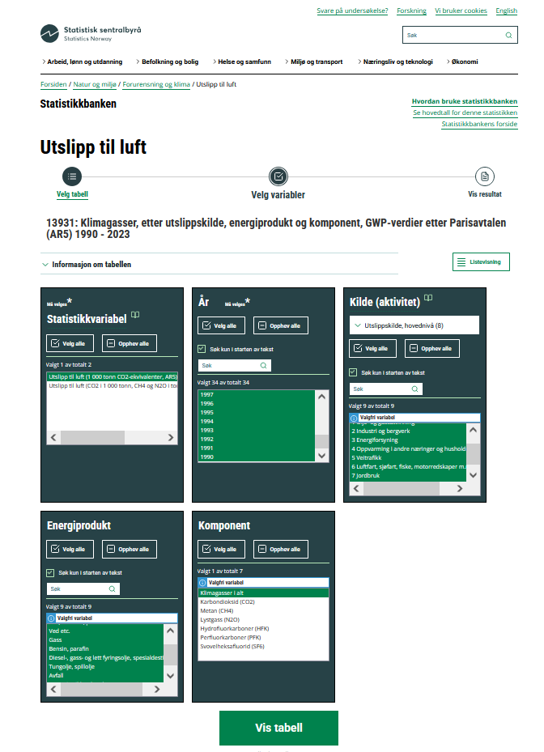
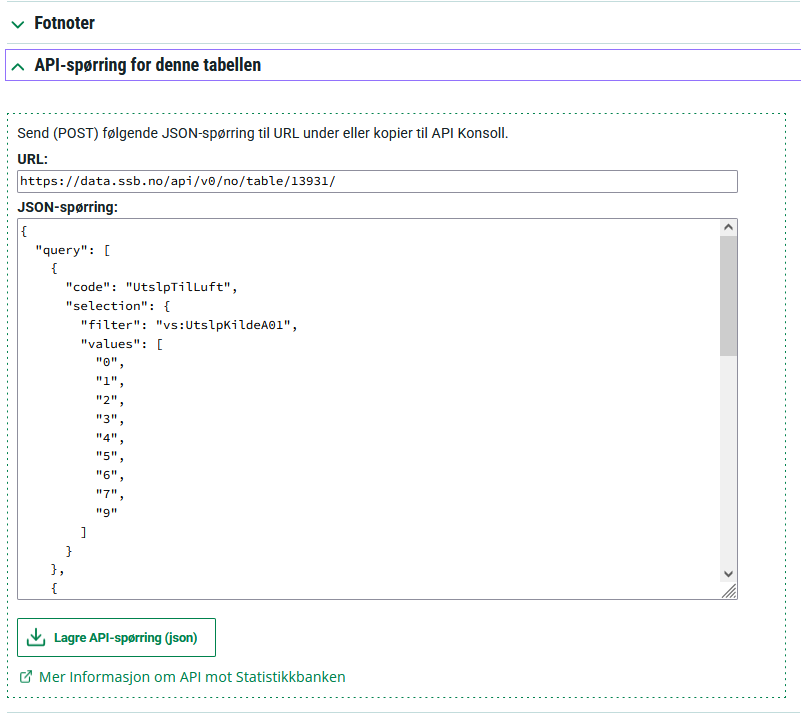
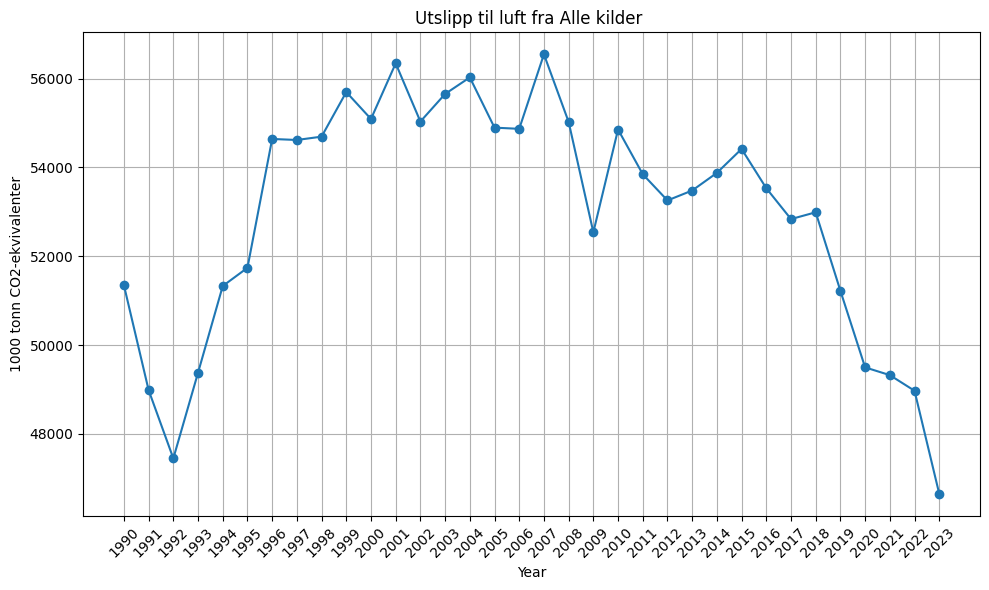
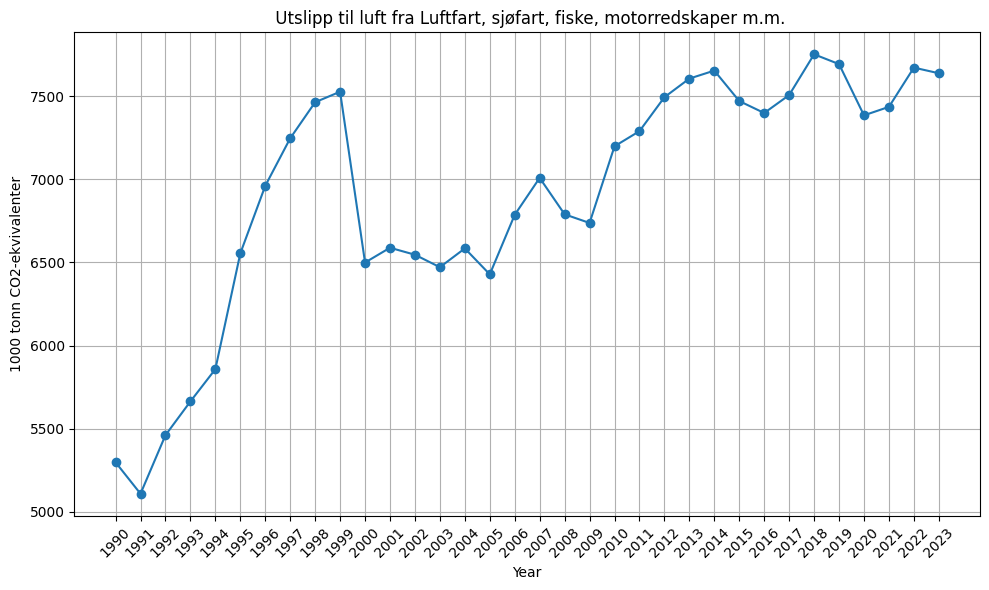

Using ‘real’ data#
#Install necessery Python packages
# Post spørring og få Pandas dataframe i retur
# benytter biblioteket pyjstat for JSON-stat
try:
from pyjstat import pyjstat
import requests
except:
!pip install pyjstat
from pyjstat import pyjstat
!pip install requests
import requests
# Import necessery Python packages
import pandas as pd # For data manipulation
import matplotlib.pyplot as plt # Import package for plotting
Loading the data#
Here we follow step by step how the data was loaded. Feel free to skip this section!
Loading (installing) necessery Python packages:
Follow the link to find the data on CO2-emission from different sectors: https://www.ssb.no/statbank/table/13931/
Select the variables you are intersted in, see example below

You can now vew this data as a table online. We can load it direcly by posting a SSB API query and using couple of Python commands!
Next, we copy the table URL and JASON query, and load the data (in json-stat2 format).

POST_URL = 'https://data.ssb.no/api/v0/no/table/13931/'
payload ={
"query": [
{
"code": "UtslpTilLuft",
"selection": {
"filter": "vs:UtslpKildeA01",
"values": [
"0",
"1",
"2",
"3",
"4",
"5",
"6",
"7",
"9"
]
}
},
{
"code": "UtslpEnergivare",
"selection": {
"filter": "item",
"values": [
"VT0"
]
}
},
{
"code": "UtslpKomp",
"selection": {
"filter": "item",
"values": [
"A10"
]
}
},
{
"code": "ContentsCode",
"selection": {
"filter": "item",
"values": [
"UtslippCO2ekvival"
]
}
}
],
"response": {
"format": "json-stat2"
}
}
resultat = requests.post(POST_URL, json = payload)
if resultat.status_code == 200:
print('Data loaded successfully!')
else:
print(f"Error: {resultat.status_code}")
print(resultat.text)
Data loaded successfully!
If data loaded sucessfully, we need to tranform data to a format we can easily work with.
Turn JASON format
resultatinto a nice and tidy DataFramedf.
dataset = pyjstat.Dataset.read(resultat.text)
df = dataset.write('dataframe')
df.head() # print out the first 5 rows of the dataframe
| kilde (aktivitet) | energiprodukt | komponent | statistikkvariabel | år | value | |
|---|---|---|---|---|---|---|
| 0 | Alle kilder | I alt | Klimagasser i alt | Utslipp til luft (1 000 tonn CO2-ekvivalenter,... | 1990 | 51348 |
| 1 | Alle kilder | I alt | Klimagasser i alt | Utslipp til luft (1 000 tonn CO2-ekvivalenter,... | 1991 | 48987 |
| 2 | Alle kilder | I alt | Klimagasser i alt | Utslipp til luft (1 000 tonn CO2-ekvivalenter,... | 1992 | 47450 |
| 3 | Alle kilder | I alt | Klimagasser i alt | Utslipp til luft (1 000 tonn CO2-ekvivalenter,... | 1993 | 49379 |
| 4 | Alle kilder | I alt | Klimagasser i alt | Utslipp til luft (1 000 tonn CO2-ekvivalenter,... | 1994 | 51331 |
Exploring the loaded data#
Let us explore and view the dataset. Type the following (one by one) in the code cells below
df– to display the whole dataframedf.info()– to display information about the dataframedf.head()– to display the first 5 rowsdf.tail()– to display the last 5 rows
# Type any of the commands below to see the data in the dataframe
Some of the columns are redunant, and could be simply removed. Which ones?
#Let's count the number of occurrences of each unique value in another column of your DataFrame df.
That is right, we can simply drop ‘energiprodukt’, ‘komponent’, ‘statistikkvariabel’ columns:
df_cleaned = df.drop(columns=['energiprodukt', 'komponent', 'statistikkvariabel'])
df_cleaned
| kilde (aktivitet) | år | value | |
|---|---|---|---|
| 0 | Alle kilder | 1990 | 51348 |
| 1 | Alle kilder | 1991 | 48987 |
| 2 | Alle kilder | 1992 | 47450 |
| 3 | Alle kilder | 1993 | 49379 |
| 4 | Alle kilder | 1994 | 51331 |
| ... | ... | ... | ... |
| 301 | Andre kilder | 2019 | 2398 |
| 302 | Andre kilder | 2020 | 2341 |
| 303 | Andre kilder | 2021 | 2294 |
| 304 | Andre kilder | 2022 | 2242 |
| 305 | Andre kilder | 2023 | 2227 |
306 rows × 3 columns
We can also reshape our dataframe so that each entry tells you the emission value for a specific source and year.
# Pivot the table: year as index, kilder as columns, values filled in
data = df_cleaned.pivot(index='år', columns='kilde (aktivitet)', values='value')
data.title = "Utslipp til luft (1 000 tonn CO2-ekvivalenter)"
data.head()
| kilde (aktivitet) | Alle kilder | Andre kilder | Energiforsyning | Industri og bergverk | Jordbruk | Luftfart, sjøfart, fiske, motorredskaper m.m. | Olje- og gassutvinning | Oppvarming i andre næringer og husholdninger | Veitrafikk |
|---|---|---|---|---|---|---|---|---|---|
| år | |||||||||
| 1990 | 51348 | 3084 | 341 | 19140 | 5050 | 5298 | 8254 | 2755 | 7426 |
| 1991 | 48987 | 2953 | 396 | 17620 | 4984 | 5109 | 8127 | 2490 | 7307 |
| 1992 | 47450 | 2924 | 390 | 15377 | 4956 | 5461 | 8728 | 2276 | 7338 |
| 1993 | 49379 | 2968 | 409 | 16325 | 4937 | 5664 | 9257 | 2308 | 7511 |
| 1994 | 51331 | 2999 | 466 | 17275 | 4944 | 5858 | 10053 | 2329 | 7408 |
Let’s plot the emissions per year.
# plot value in the first column vs year
plt.figure(figsize=(10, 6))
#plt.plot(data.index, data['Alle kilder'], marker='o') # refer to the column by name
plt.plot(data.index, data.iloc[:, 0], marker='o') # alternatively refer to the column by index
plt.title('Utslipp til luft fra Alle kilder ')
plt.xlabel('Year')
plt.ylabel( '1000 tonn CO2-ekvivalenter')
plt.grid(True)
plt.xticks(rotation=45)
plt.tight_layout()
plt.show()

Modify the code below to plot emission from different sources per year.
# Plot
plt.figure(figsize=(10, 6))
#plt.plot(data.index, data['Alle kilder'], marker='o') # refer to the column by name
plt.plot(data.index, data.iloc[:, 5], marker='o') # alternatively refer to the column by index
plt.title(' Utslipp til luft fra '+ data.columns[5])
plt.xlabel('Year')
plt.ylabel( '1000 tonn CO2-ekvivalenter')
plt.grid(True)
plt.xticks(rotation=45)
plt.tight_layout()
plt.show()
